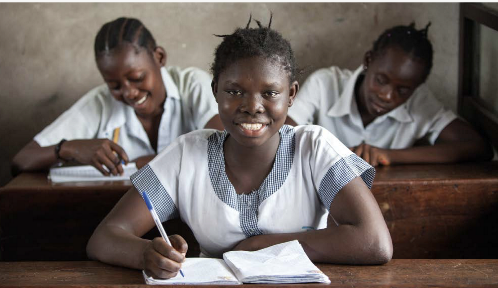

SUITE :
CONCLUSION
LA PAUVRETÉ : UN FACTEUR DÉTERMINANT
L’ENVIRONNEMENT OÙ VIE L'ENFANT INFLUE BEAUCOUP SUR SON COMPORTEMENT EN FONCTION DES EXPÉRIENCE QU'IL VIT ET QU'IL VOIT, CELA DONNE BEAUCOUP D'INFORMATION SU RSON DÉVELOPPEMENT, EN PARTICULIER sur des enfants âgés de 0 à 5 ans.
PENDANT CETTE PÉRIODE, LE CERVEAU SE DÉVELOPPE PLUS RAPIDEMENT QUE DANS N’IMPORTE QUELLE AUTRE ÉTAPE DE CROISSANCE DE L’ENFANT.
Le Nigeria, avec plus de 200 Millions d'habitants et l'un des pays le plus pauvre du monde suivi par l'inde, un grand nombre de leur population vivent avec moins de 1,90 dollar par jour !!
L’école offre à tout les enfants la chance de développer certaines compétences essentielles et importantes à leur propre développement tel que :
Le savoir,
développer ses propres idées, une pensée critique,
L'autonomie,
La communication,
L’indépendance,
être organisé,
s'intégrer dans une société.
L'écoles offre l'opportunité de travailler en groupe, ils ont l'opportunité sur place d'intéragir entre eux et donc d'apprendre à vivre en société en groupe par exemple dans des temps comme à la récréation, le temps de la pause déjeuner, des projets de groupes, cours de musiques et d'art platique, cours de sport ainsi que durant les fêtes etc. ...
SOLUTION : L'ÉDUCATION CONTRE LA PAUVRETÉ
1. L’éducation réduit la pauvreté
Environ, plus d'1 millions de personnes pourraient sortir de la pauvreté grâce à l'éducation en sortant de l'école en ayant acquis les compétences de base.
Ce qui équivaut, à 12% de la population la plus pauvre du monde qui pourrait sortir de cettte situation en s'instruisant et réduire par conséquent 30% la pauvreté sur la population mondiale.
2. Augmentation de salaire
D'après des études réalisées une année d'étude supplémentaire augmenterais le salaire d'environ 10%.
haque année d’étude ajoutée, les salaires augmentent en moyenne de 10%.
Plus on investi dans les année d'étude supplémentaite plus les salaires augmentent dans les pays avec de faible revenu.
3. Elle réduits les inégalités
Si la population des pays riches et des pays pauvres avaient accés à la même éducation l'écart entre eux baisseraient de 39%.
4. Elle favorise l'économie
Le niveaux scolaires de la population explique la différence entre le taux de croissancre entre les pays africains et asiatique entre 1965 et 2010
Le PIB par habitant serait beaucoup plus important si les enfants des pays pauvres apprenaient à lire.
5. SAVE THE WORLD
La question, de la durabilité et un sujet auquel nous ne pouvons plus échapper de nos jours.
De plus en plus d'entreprises se tournent vers "le vert" mais pour il faut des travailleurs qualifiés. Il faut savoir que l'agriculture dégage énorment d' émissions de gaz à effet de serre. L’éducation au niveaux primaire et secondaire pourrait aider quelques futurs agricultueurs à innover sur de nouvelles pratiques et par conséquent faire avancer le développement durable.
DE NOUVEAUX MÉTIERS SE CRÉE.
SUITE :
CONCLUSION
created with
Free WYSIWYG HTML Editor .